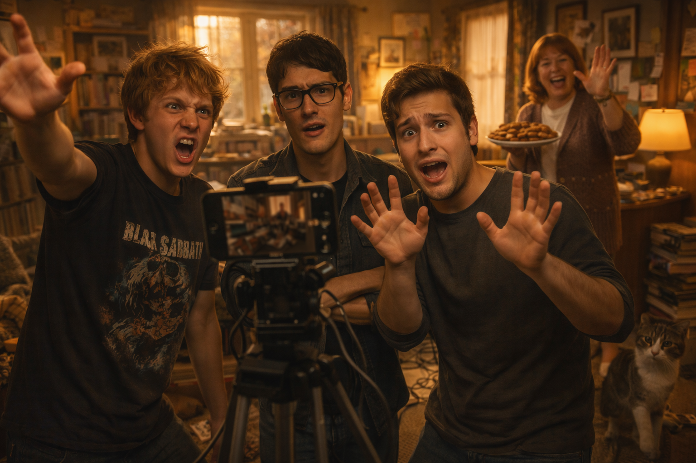

A funny story about making a movie with friends

Value focus: It doesn't matter how bad the result is. What matters is that you did it together.
It was a rainy Saturday. Mike was bored.
"Guys," he announced, "we're going to make a movie."
Dave didn't look up from his phone. "A movie? With what? Our phones?"
"Yes! Modern technology! Everything can be filmed. If we work hard, it might even be shown at a festival!"
Narrator: "It wasn't shown at any festival."
Mike: "Don't ruin my dream."
So we became filmmakers. Mike was the director, Dave was the cameraman, and I was the actor. The script was written in twenty minutes. It was about a detective who solves a mystery in a haunted house. The twist? The detective was the ghost all along.
"It's genius," Mike said. "It's never been done before."
"It's been done a million times," Dave said. "But okay."
We turned on the camera and started filming. The first scene was shot in Mike's living room. I was supposed to look scared. I tried my best, but I looked like someone who'd just seen a spider.
"Cut!" Mike yelled. "You're not scared! You're confused!"
"I am confused," I said. "Why are we doing this?"
Dave: "That's the best question you've asked all day."
The filming continued. Every scene was ruined by something. The lights were turned off by accident. The cat walked into the shot. Mike's mom turned up with cookies and waved at the camera. The audio was terrible — you could hear a plane flying overhead in every scene.
By Sunday evening, we had two hours of footage. Mike edited it all night. The next day, he gathered us to watch the final cut.
The movie was… something. The lighting was weird. The sound was worse. My "scared" face looked like I was constipated. Dave's camerawork was so shaky that viewers might get seasick. And the twist? You couldn't understand it because half the dialogue was covered by Mike's mom saying "COOKIES!"
We sat in silence.
Dave: "It's the worst movie I've ever seen."
Mike: "I know."
Narrator: "So it's a failure?"
Mike: "No! It's the best worst movie ever made! This should be shown at a festival of bad movies!"
And you know what? He was right. The movie was uploaded to YouTube. It got a thousand views in a week. People loved it. Comments said things like "This is hilarious" and "I've never laughed so hard."
Mike was interviewed for a small blog. He was asked: "How was this masterpiece created?"
He said: "It was made with love. And terrible lighting. And cookies."
The movie was never shown at a festival. But it turned out to be the most fun we'd ever had. And sometimes, that's enough.
[Intro — acoustic guitar, casual, like a jam session] (One, two, three, four…) [Verse 1] We had a phone, we had a plan To make a movie, not a fan But the cat walked in, the lights went down And Mike's mom appeared with cookies… from the town! [Pre-chorus] The camera shook, the sound was sad Our acting? Pretty bad! But we didn't mind — we just laughed instead! [Chorus — playful, not loud] We made the worst movie ever! But we laughed and laughed together! Cut! Cut! Cut! (said, not shouted) We are the kings of bad cinema! (Just a silly song about a silly day…) [Verse 2] Dave bit his tongue, I sneezed so loud The script was lost, we were not proud But the YouTube comments made us smile «This is the best disaster in a while!» [Pre-chorus] No Oscars here, no golden frame Just good old friends and a silly game! [Chorus — playful, sing-along] We made the worst movie ever! But we laughed and laughed together! Cut! Cut! Cut! (said, not shouted) We are the kings of bad cinema! [Bridge — spoken-sung, quiet, with a smile] Perfect is boring… chaos is gold… This is the story that we always told… [Final Chorus — cheerful, a bit faster, but still relaxed] We made the worst movie ever! And we'll do it again! Oh, never say never! Cut! Cut! Cut! We are the kings of bad cinema! (Stomp! Clap!) — we are the kings! (Stomp! Clap!) — of bad cinema! [Outro — fading, with laughter] Best… worst… ever… (Chuckling)
| Word / phrase | American pronunciation | Russian |
|---|---|---|
| to turn on | [tɜːrn ɑːn] | включать |
| to turn off | [tɜːrn ɔːf] | выключать |
| to turn up | [tɜːrn ʌp] | появляться, увеличивать громкость |
| to turn down | [tɜːrn daʊn] | отклонять, уменьшать громкость |
| to turn out | [tɜːrn aʊt] | оказываться, получаться |
| to turn into | [tɜːrn ˈɪntə] | превращаться в |
| to turn around | [tɜːrn əˈraʊnd] | разворачиваться, менять направление |
| movie | [ˈmuːvi] | фильм |
| director | [dəˈrektər] | режиссёр |
| cameraman | [ˈkæmrəmæn] | оператор |
| script | [skrɪpt] | сценарий |
| detective | [dɪˈtektɪv] | детектив |
| haunted house | [ˈhɔːntɪd haʊs] | дом с привидениями |
| twist | [twɪst] | неожиданный поворот |
| ghost | [ɡoʊst] | призрак |
| scene | [siːn] | сцена |
| to film | [fɪlm] | снимать |
| footage | [ˈfʊtɪdʒ] | отснятый материал |
| to edit | [ˈedɪt] | монтировать |
| shaky | [ˈʃeɪki] | трясущийся |
| seasick | [ˈsiːsɪk] | страдающий морской болезнью |
| dialogue | [ˈdaɪəlɑːɡ] | диалог |
| failure | [ˈfeɪljər] | провал |
| hilarious | [hɪˈleriəs] | уморительный |
| masterpiece | [ˈmæstərpiːs] | шедевр |
1. Match the phrasal verb with its meaning from the story.
2. Find the phrasal verbs in the text and write the sentences:
a) turn on: ______________________________
b) turn off: ______________________________
c) turn up: ______________________________
d) turn out: ______________________________
3. Fill in the blanks with the correct form of TURN + particle:
a) Please ______ the lights. It's dark in here.
b) Can you ______ the music? It's too loud.
c) I invited him, but he never ______.
d) The movie ______ to be much better than we expected.
e) Their fun afternoon ______ a film project.
1. Identify the passive structures in the text:
a) "The first scene was shot in Mike's living room." — Tense: ______
b) "The lights were turned off by accident." — Tense: ______
c) "Mike was interviewed for a small blog." — Tense: ______
d) "It was made with love." — Tense: ______
2. Change these active sentences to passive:
a) Someone uploaded the movie to YouTube.
→ The movie ______ ______ to YouTube.
b) People loved the comments.
→ The comments ______ ______ by people.
c) Mike's mom turned up with cookies.
→ Cookies ______ ______ up with by Mike's mom. (Be careful — this one is tricky!)
d) They shot every scene in the house.
→ Every scene ______ ______ in the house.
3. Complete with the correct passive form:
a) The script ______ (write) in twenty minutes.
b) The movie ______ (never / show) at a festival.
c) The audio ______ (ruin) by plane noise.
d) Mike ______ (ask) about the film in an interview.